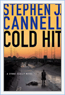

Shane Scully Novels
Shane Scully is the star of five novels by Stephen J. Cannell: The Tin Collectors, The Viking Funeral, Hollywood Tough, Vertical Coffin, and Cold Hit. The newest installation "WHITE SISTER" will be published this summer. You can read excerpts from all five novels below. For downloads of media pertaining to a few of the novels, please visit the downloads section.
Although he's not the main character, Shane does appear in Stephen's novel, Runaway Heart, to help out his ex-partner, Jack Wirta. Read more about Runaway Heart here!
Cold Hit

Shane Scully and his partner are assigned to the case of “The Fingertip Killer”—a serial murderer preying on homeless Vietnam veterans in Los Angeles. Every two weeks he strikes: he beats his victims, then shoots them in the back of the head. Once they’re dead, he cuts off their fingertips and tosses their bodies in the river.
Vertical Coffin
In Scully’s most terrifying case to date, Shane must investigate murders connected with an apparent deadly, midnight war between two elite SWAT units from the L.A. Sheriffs and the ATF.
In a plot full of twists and thrills, where nothing is as it appears, Shane puts himself and his loved ones in terrible jeopardy before finally discovering the shocking and deadly truth.
Hollywood Tough
Back on the LAPD and hailed as a hero after taking down a deadly gang of rogue cops in The Viking Funeral, Shane Scully finds himself unwittingly involved in a criminal scheme to take over the movie business.
Soon, he will have to go deep undercover to uncover a Hollywood conspiracy.
The Viking Funeral
LAPD Sergeant Shane Scully has just seen a ghost! Or perhaps he's losing what's left of his sanity. Thus begins the thriller that pits the hero of Stephen J. Cannell's New York Times best-selling The Tin Collectors against his closest childhood friend.
The Tin Collectors
Inside the department, they're called The Tin Collectors: Internal Affairs Agents, the police of the police. If they catch you breaking the rules, they'll come after your badge. If they want you badly enough, they'll collect more than just your tin.
Check out Shane Scully's Tour of Duty!
There are additional downloadable items from each of these novels on the downloads page -- including screensavers, Flash intros, Adobe Reader excerpts, and more!